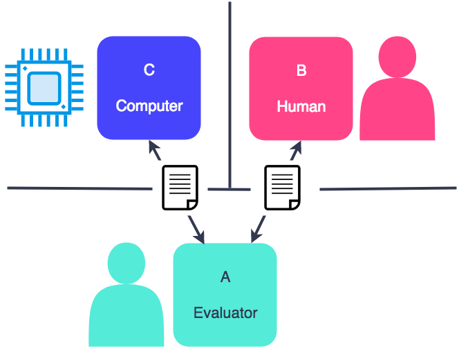

There is a stigma that robots are going to lose control one day and overpower humans. However, the current developments in Artificial Intelligence (AI) are not advanced enough and the general nature of AI is intended for other purposes. In addition, robots undergo numerous safety tests before they are fully manufactured.
AI is already all around us ranging in form from ad targeting and product recommendation to self checkouts and siri. The one thing that a majority of these have in common is that they are limited to the digital realm (softbots instead of robots). Why? The real world is too largely unpredictable to be coded for given the current knowledge. Just being able to navigate the human world would prove challenging, which is why most robots are concentrated in their own space.
A test developed by British computer scientist Alan Turing in 1950 that analyses a computer’s ability to emulate humans. The test involves a human judge, a human participant, and a computer. The human judge must determine which of the two is the human. This test is originally designed to determine if machines can think.
A few programs in the 1970’s named ELIZA and PARRY were able to fool psychiatrists with 50% accuracy - equal to random guessing. These programs were text-only interfaces between patients and judges. Since then a Competition has been held every year to award prizes to the program that can pass the Turing test the best. Programs in AI research have been using more machine learning techniques as the technology has developed.
The programs are able to imitate humans - winning the imitation game - at least in text form, but what these machines don’t do is think. They use calculations, natural language processing, and data analysis to form sentences like a human, but these are nowhere close to thinking and intelligence.
All machines are created by humans to perform a certain task. If a programmer wants their program to have needs, it has to be deliberately and artificially implemented. On its own a robot doesn’t care. There is no way for a robot to go rogue unless it is told to do so.
There are many safety testing procedures done before a robot is complete. There are not only tests on the robot but there is also training for those who maintain and manage the robot. Robots get tested for both hardware and software malfunctions to prove that they are safe.
“Any robot system should have basic safety requirements. First, hardware should be proved safe when it stands alone or when no software controls it. Second, software must run and test correctly during simulation or when no hardware is involved.” (Fei, Ng, Chauhan, & Kwoh, 2001).
The paper evaluated the safety of medical robots and discussed a model to control safety factors and potential hazards. The medical robots have direct contact with humans like surgical robots have direct contact with the patient and the surgeon.
“The safety issues of medical robots are more stringent, dedicated and critical.” (Fei, Ng, Chauhan, & Kwoh, 2001).
Some safety regulations that arose were requirements on documentation with detailed descriptions on specifications of the whole systems including mechanical and software. They also included descriptions on the working environments just to show the robot was developed following a properly documented methodology. The robots will also require sensors to monitor motor position and switches to prevent motors from running out of travel limits.
In regards to the training for the humans working with the robots… “Any user responsible for the safety of the robot shall be trained appropriately, prior to operating the robot, and shall be aware of the dangers and precautions to be taken. In the special case of a robot bearing harmful parts a special, visible and legible sign shall be placed on the robot by the manufacturer warning any user. “ (Mitka, Gasteratos, Kyriakoulis, Mouroutsos, 2012).
The manufacturer of the robot must also provide complete and clear instructions in a user’s instruction manual so the user will have full knowledge of the possible dangers related to the robot. The robot also have their own backup procedure if the user fails to recognize any problems or cannot control/fix the problem. The robot will come to a halt with the backup procedure or it will also have an emergency stop programmed that if the emergency button is pressed it will stop within seconds.